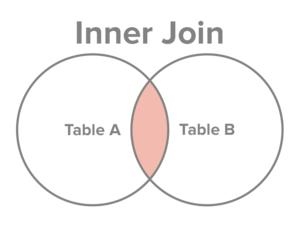
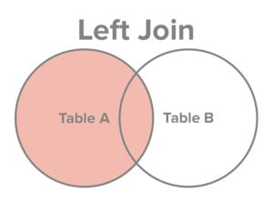
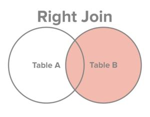
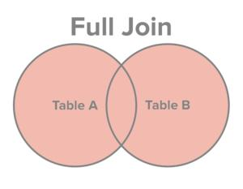

本章案例的数据初始化：powerpoint-init-data
满足条件的记录才会出现在结果集中。

连接时，条件为等量关系。
案例：查询每个员工所在的部门名称，要求显示员工名、部门名。
select e.ename,d.dname from emp e
inner join dept d
on e.deptno = d.deptno;
-- inner可以省略。
mysql> select e.ename,d.dname from emp e
-> join dept d
-> on e.deptno = d.deptno;
+--------+------------+
| ename | dname |
+--------+------------+
| SMITH | RESEARCH |
| ALLEN | SALES |
| WARD | SALES |
| JONES | RESEARCH |
| MARTIN | SALES |
| BLAKE | SALES |
| CLARK | ACCOUNTING |
| SCOTT | RESEARCH |
| KING | ACCOUNTING |
| TURNER | SALES |
| ADAMS | RESEARCH |
| JAMES | SALES |
| FORD | RESEARCH |
| MILLER | ACCOUNTING |
+--------+------------+
14 rows in set (0.037 sec)
连接时，条件是非等量关系。
案例：查询每个员工的工资等级，要求显示员工名、工资、工资等级。
select e.ename,e.sal,s.grade from emp e
join salgrade s
on e.sal between s.losal and s.hisal;
mysql> select e.ename, s.grade from emp e join salgrade s
-> on e.sal between s.losal and s.hisal;
+--------+-------+
| ename | grade |
+--------+-------+
| SMITH | 1 |
| ALLEN | 3 |
| WARD | 2 |
| JONES | 4 |
| MARTIN | 2 |
| BLAKE | 4 |
| CLARK | 4 |
| SCOTT | 4 |
| KING | 5 |
| TURNER | 3 |
| ADAMS | 1 |
| JAMES | 1 |
| FORD | 4 |
| MILLER | 2 |
+--------+-------+
14 rows in set (0.001 sec)
连接时，一张表看做两张表，自己和自己进行连接。
案例：找出每个员工的直属领导，要求显示员工名、领导名。
select e.ename 员工名, l.ename 领导名 from emp e
join emp l on e.mgr = l.empno;
mysql> select e.ename 员工, l.ename 领导 from emp e join emp l
-> on e.mgr = l.empno;
+--------+--------+
| 员工 | 领导 |
+--------+--------+
| SMITH | FORD |
| ALLEN | BLAKE |
| WARD | BLAKE |
| JONES | KING |
| MARTIN | BLAKE |
| BLAKE | KING |
| CLARK | KING |
| SCOTT | JONES |
| TURNER | BLAKE |
| ADAMS | SCOTT |
| JAMES | BLAKE |
| FORD | JONES |
| MILLER | CLARK |
+--------+--------+
13 rows in set (0.001 sec)
注意：KING这个员工没有查询出来。如果想将KING也查询出来，需要使用外连接。
内连接是满足条件的记录查询出来。也就是两张表的交集。
外连接是除了满足条件的记录查询出来，再将其中一张表的记录全部查询出来，另一张表如果没有与之匹配的记录，自动模拟出NULL与其匹配。
左外连接：

右外连接：

案例：查询每个员工对应的领导，如果没有领导的员工也要显示（这就要外连接了）
mysql> select e.ename 员工, l.ename 领导 from emp e
-> left join emp l
-> on e.mgr = l.empno;
+--------+--------+
| 员工 | 领导 |
+--------+--------+
| SMITH | FORD |
| ALLEN | BLAKE |
| WARD | BLAKE |
| JONES | KING |
| MARTIN | BLAKE |
| BLAKE | KING |
| CLARK | KING |
| SCOTT | JONES |
| KING | NULL |
| TURNER | BLAKE |
| ADAMS | SCOTT |
| JAMES | BLAKE |
| FORD | JONES |
| MILLER | CLARK |
+--------+--------+
14 rows in set (0.001 sec)
可以看到这次的 KING 有显示了。
还是上面的案例，可以写作右连接。
mysql> select e.ename 员工, l.ename 领导 from emp l
-> right join emp e
-> on e.mgr = l.empno;
什么是全连接？
MySQL不支持full join。oracle数据库支持。

两张表数据全部查询出来，没有匹配的记录，各自为对方模拟出NULL进行匹配。
客户表：t_customer
| cid | cname |
|---|---|
| 1 | zhangsan |
| 2 | lisi |
| 3 | wangwu |
订单表：t_order
| oid | price | cid |
|---|---|---|
| 100 | 3400 | 1 |
| 200 | 6600 | 2 |
| 300 | 9900 | NULL |
案例：查询所有的客户和订单。
select
c.*,o.*
from
t_customer c
full join
t_order o
on
c.cid = o.cid;
三张表甚至更多张表如何进行表连接
案例：找出每个员工的部门，并且要求显示每个员工的薪资等级。
select
e.ename,d.dname,s.grade
from
emp e
join
dept d
on
e.deptno = d.deptno
join
salgrade s
on
e.sal between s.losal and s.hisal;
+--------+------------+-------+
| ename | dname | grade |
+--------+------------+-------+
| SMITH | RESEARCH | 1 |
| ALLEN | SALES | 3 |
| WARD | SALES | 2 |
| JONES | RESEARCH | 4 |
| MARTIN | SALES | 2 |
| BLAKE | SALES | 4 |
| CLARK | ACCOUNTING | 4 |
| SCOTT | RESEARCH | 4 |
| KING | ACCOUNTING | 5 |
| TURNER | SALES | 3 |
| ADAMS | RESEARCH | 1 |
| JAMES | SALES | 1 |
| FORD | RESEARCH | 4 |
| MILLER | ACCOUNTING | 2 |
+--------+------------+-------+
14 rows in set (0.001 sec)